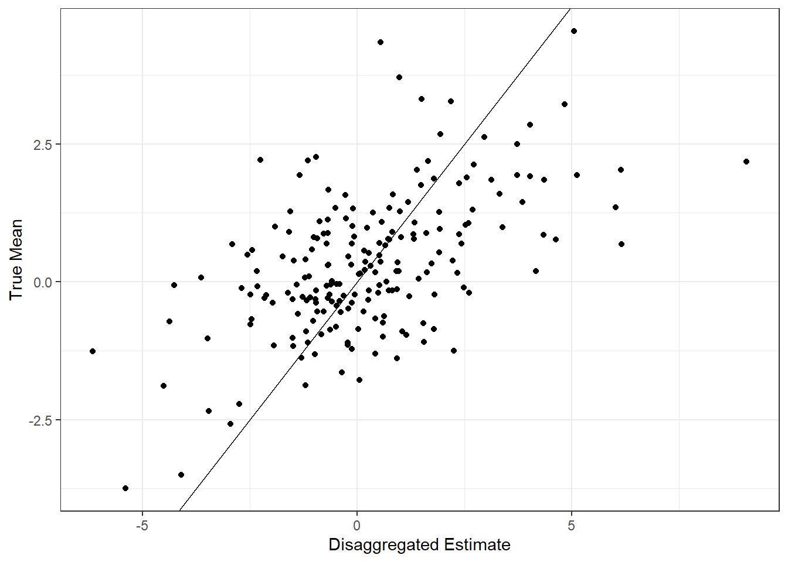
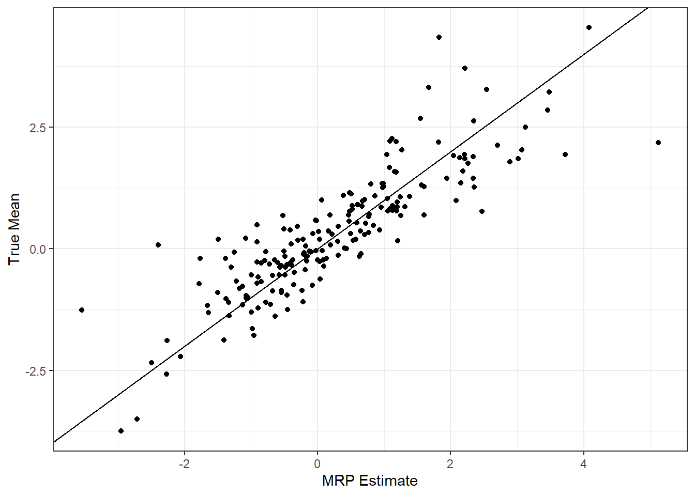
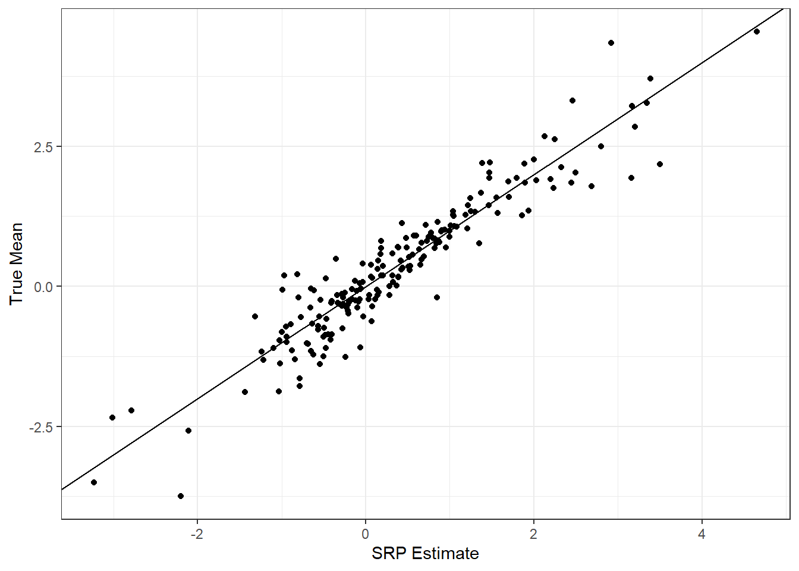

devtools::install_github('joeornstein/SRP')
library(SRP)
library(tidyverse)The SRP Package
SRP is an R package that contains useful functions for implementing multilevel regression and poststratification (MRP) and stacked regression and poststratification (SRP).
Motivation
Suppose we want to know how some public opinion varies by subnational unit. But we don’t have surveys that were conducted at the unit-level, only a national-level survey. How can we use the information from the national survey to make inferences about the subnational level? This vignette walks through three techniques for doing so: disaggregation, multilevel regression and poststratification (MRP), and stacked regression and poststratification (SRP). It concludes with an introduction to synthetic poststratification.
Installation
The SRP package is currently available on GitHub. You can install it using the devtools package. You’ll also want to load the tidyverse library for this vignette.
The Data
The dataset (trainset) contains individual-level data on public opinion and demographic characteristics. It is simulated data, generated from the Monte Carlo in Ornstein (2020). It contains the following variables:
trainset <- SRP::vignetteData
trainset
#> # A tibble: 3,000 × 8
#> ID y x1 x2 unit latitude longitude unit_covariate
#> <int> <dbl> <int> <int> <int> <dbl> <dbl> <dbl>
#> 1 638233 -2.68 2 1 43 0.663 0.140 2.22
#> 2 1909280 2.01 3 3 128 0.987 0.504 2.64
#> 3 2513825 -4.36 1 2 168 0.752 0.746 2.84
#> 4 2968824 -0.989 2 3 198 0.764 0.190 3.27
#> 5 258017 4.18 1 1 18 0.545 0.897 2.00
#> 6 1252503 -4.54 3 3 84 0.770 0.195 2.43
#> 7 1414783 -3.63 2 2 95 0.518 0.0937 2.47
#> 8 602889 3.56 3 3 41 0.162 0.559 2.20
#> 9 157609 0.271 2 2 11 0.431 0.554 1.93
#> 10 2610832 5.99 4 4 175 0.898 0.932 2.91
#> # ℹ 2,990 more rowsThe variable \(y\) is our outcome of interest, \(x_1\) and \(x_2\) are individual-level covariates, unit is the subnational unit ID, and latitude, longitude, and unit_covariate are characteristics of the subnational unit.
Disaggregation
Disaggregation is the most straightforward method to estimate. Simply take the unit-level means from the national survey. Note, however, that the number of observations within each unit is fairly small. As a result, disaggregation is unlikely to yield good estimates. This is why we adopt a model-based approach.
disag_estimates <- trainset %>%
group_by(unit) %>%
summarise(disag_estimate = mean(y),
num = n())
disag_estimates
#> # A tibble: 200 × 3
#> unit disag_estimate num
#> <int> <dbl> <int>
#> 1 1 -6.15 14
#> 2 2 2.61 14
#> 3 3 -4.10 16
#> 4 4 -3.45 15
#> 5 5 -3.63 10
#> 6 6 -5.40 21
#> 7 7 -2.74 15
#> 8 8 -2.95 18
#> 9 9 -1.61 15
#> 10 10 -1.48 16
#> # ℹ 190 more rowsMRP
Multilevel regression and poststratification (MRP) was introduced by Gelman and Little (1997) and refined by Park, Gelman, and Bafumi (2004). It proceeds in two steps:
- Estimate a multilevel regression, predicting opinion using observed individual-level and unit-level covariates.
- Poststratify by taking the mean of each group’s prediction weighted by their frequency in the subnational unit.
We can estimate the first-stage regression using the lme4 package.
library(lme4)
model1 <- lmer(y ~ (1|x1) + (1|x2) + unit_covariate + (1|unit), data = trainset)For the second stage, we need a poststratification frame. For the SRP package, it should come in the following format.
PSFrame <- SRP::vignettePSFrame
PSFrame
#> # A tibble: 3,200 × 7
#> unit x1 x2 freq unit_covariate latitude longitude
#> <int> <int> <int> <int> <dbl> <dbl> <dbl>
#> 1 1 1 1 5482 1.54 0.623 0.0647
#> 2 1 1 2 2497 1.54 0.623 0.0647
#> 3 1 1 3 499 1.54 0.623 0.0647
#> 4 1 1 4 43 1.54 0.623 0.0647
#> 5 1 2 1 2418 1.54 0.623 0.0647
#> 6 1 2 2 1817 1.54 0.623 0.0647
#> 7 1 2 3 603 1.54 0.623 0.0647
#> 8 1 2 4 58 1.54 0.623 0.0647
#> 9 1 3 1 557 1.54 0.623 0.0647
#> 10 1 3 2 590 1.54 0.623 0.0647
#> # ℹ 3,190 more rowsEach row reports the empirical frequency for each unique combination of individual-level characteristics, repeated for each subnational unit. For example, the first row reports that there are 5482 individuals with \(x_1 = 1\) and \(x_2 = 1\) in Unit 1.
Once we have both pieces of information – the predictions and the frequencies – poststratification simply requires taking a weighted average, using the poststratify function. Note that this function requires your poststratification frame to have two particular variables:
unit: the identity of the subnational unit.freq: the empirical frequency for each cell.
pred <- predict(model1, PSFrame, allow.new.levels = T)
mrp_estimates <- poststratify(pred, PSFrame)
mrp_estimates
#> # A tibble: 200 × 2
#> unit poststratifiedEstimate
#> <int> <dbl>
#> 1 1 -3.54
#> 2 2 -1.38
#> 3 3 -2.72
#> 4 4 -2.49
#> 5 5 -2.39
#> 6 6 -2.96
#> 7 7 -2.06
#> 8 8 -2.27
#> 9 9 -1.76
#> 10 10 -1.66
#> # ℹ 190 more rowsSRP
Stacked regression and poststratification (SRP) proceeds in the same fashion as MRP, but the first-stage predictions come from an ensemble model average generated through stacking. See Ornstein (2020) for technical details.
To start, we must tune and estimate each of the component models separately. The following code estimates a hierarchical linear regression model, LASSO, random forest, KNN, and gradient boosting.
library(glmnet)
library(ranger)
library(kknn)
library(xgboost)
library(caret)
#Estimate HLM
hlmFormula <- y ~ (1|x1) + (1|x2) + unit_covariate + (1|unit)
hlmModel <- lmer(hlmFormula, data = trainset)
#Tune LASSO
lasso_vars <- c("x1","x2","unit","unit_covariate")
lasso_factors <- c('x1', 'x2', 'unit') #which variables to convert to factors
trainset_lasso <- cleanDataLASSO(trainset, lasso_vars, lasso_factors)$trainset
lassoModel <- cv.glmnet(trainset_lasso, trainset$y,
type.measure = "mse")
#Tune KNN
knnFormula <- y ~ x1 + x2 + latitude + longitude + unit_covariate
knn_train <- train.kknn(knnFormula, data=trainset, kmax = 201) #Find best k (LOOCV)
k_best <- knn_train$best.parameters$k
#Tune Random Forest
forestFormula <- y ~ x1 + x2 + latitude + longitude + unit_covariate
forestModel <- ranger(forestFormula, data = trainset)
#Tune GBM
gbm_vars <- c("x1","x2","latitude","longitude","unit_covariate")
trainset_gbm <- cleanDataGBM(trainset=trainset, gbm_vars=gbm_vars)$trainset
#Create a custom 'xgb.DMatrix'. Faster computation
dtrain <- xgb.DMatrix(trainset_gbm, label = trainset$y)
#5-fold cross-validation; pick nrounds that minimizes RMSE
xgb.tune <- xgb.cv(data = dtrain,
booster = "gbtree",
objective = "reg:squarederror",
eval_metric = "rmse",
eta = 0.02,
nrounds = 50 / 0.02, #Lower eta -> more trees
nfold = 5,
verbose = F,
early_stopping_rounds = 20)
gbmModel <- xgboost(data = dtrain,
booster = "gbtree",
objective = "reg:squarederror",
eval_metric = "rmse",
eta = 0.02,
verbose = F,
nrounds = xgb.tune$best_iteration)Next, we will use the getStackWeights() function to estimate the optimal ensemble model average weights using 5-fold cross-validation.
stackWeights <- getStackWeights(trainset = trainset,
hlmFormula = hlmFormula,
lasso_vars = lasso_vars,
lasso_factors = lasso_factors,
forestFormula = forestFormula,
knnFormula = knnFormula, k_best = k_best,
gbm_vars = gbm_vars, gbm_factors = NULL,
gbm_params = list(eta = 0.02), gbm_tune = xgb.tune,
nfolds = 5)
stackWeights %>% round(3)
#> [1] 0.322 0.000 0.098 0.000 0.581Then we can poststratify as before.
PSFrame_lasso <- cleanDataLASSO(PSFrame, lasso_vars = lasso_vars, lasso_factors = lasso_factors,
new_vars_lasso = colnames(trainset_lasso))$trainset
PSFrame_gbm <- cleanDataGBM(PSFrame, gbm_vars = gbm_vars)$trainset
M1 <- predict(hlmModel, PSFrame, allow.new.levels = T)
M2 <- predict(lassoModel, newx = PSFrame_lasso, s = lassoModel$lambda.min)
M3 <- kknn(knnFormula, train = trainset, test = PSFrame, k = k_best)$fitted.values
M4 <- predict(forestModel, PSFrame)$predictions
M5 <- predict(gbmModel, PSFrame_gbm)
M <- cbind(M1,M2,M3,M4,M5) %>% as.matrix
pred <- M %*% stackWeights
#Poststratify
srp_estimates <- poststratify(pred, PSFrame)
head(srp_estimates)
#> # A tibble: 6 × 2
#> unit poststratifiedEstimate
#> <int> <dbl>
#> 1 1 -0.180
#> 2 2 0.780
#> 3 3 -3.13
#> 4 4 -2.95
#> 5 5 0.236
#> 6 6 -2.09Results
Because the data came from a simulation, we also know the true unit-level means. Let’s see how our estimates compare.



Synthetic Poststratification
What if you do not have the joint frequency distribution for all your predictor variables at the subnational level? Leemann and Wasserfallen (2017) propose a method that instead uses marginal frequency distributions called synthetic poststratification. The approach proceeds by multiplying the marginal probabilities to create a synethtic joint distribution, assuming that the predictor variables are statistically independent.
Note that this is a strong assumption. However, if the first-stage model is additively-separable, then both classical and synthetic poststratification produce identical results (see Appendix A in Ornstein (2020) for the proof). This implies that Multilevel Regression and Synthetic Poststratification (MrsP) can produce strictly superior estimates when the first-stage model is linear-additive, because one can include more predictor variables.
The SRP package provides a function that can generate synthetic poststratification frames, called getSyntheticPSFrame().
Using the Function
Suppose you have two (non-synthetic) frequency distributions describing the same population.
PSFrame1 <- SRP::race
PSFrame2 <- SRP::education
PSFrame1
#> # A tibble: 8 × 3
#> unit race freq
#> <int> <int> <int>
#> 1 1 1 100
#> 2 1 2 200
#> 3 1 3 300
#> 4 1 4 400
#> 5 2 1 200
#> 6 2 2 100
#> 7 2 3 300
#> 8 2 4 400
PSFrame2
#> # A tibble: 6 × 3
#> unit education freq
#> <int> <int> <int>
#> 1 1 1 250
#> 2 1 2 300
#> 3 1 3 450
#> 4 2 1 450
#> 5 2 2 350
#> 6 2 3 200To get the synthetic joint distribution, just call getSyntheticPSFrame(). Note that the resulting output is consistent with the marginal frequency distributions; add up all the observations with race == 1 in and it should yield the same frequency from PSFrame1.
PSFrame <- getSyntheticPSFrame(PSFrame1, PSFrame2)
PSFrame
#> # A tibble: 24 × 4
#> unit race education freq
#> <int> <int> <int> <dbl>
#> 1 1 1 1 25
#> 2 1 1 2 30
#> 3 1 1 3 45
#> 4 1 2 1 50
#> 5 1 2 2 60
#> 6 1 2 3 90
#> 7 1 3 1 75
#> 8 1 3 2 90
#> 9 1 3 3 135
#> 10 1 4 1 100
#> # ℹ 14 more rowsIf you want to generate a synthetic poststratification frame from more than one marginal distribution, simply repeat the process.
PSFrame3 <- SRP::sex
PSFrame3
#> # A tibble: 4 × 3
#> unit sex freq
#> <int> <int> <int>
#> 1 1 1 600
#> 2 1 2 400
#> 3 2 1 500
#> 4 2 2 500
PSFrame <- getSyntheticPSFrame(PSFrame, PSFrame3)
PSFrame
#> # A tibble: 48 × 5
#> unit race education sex freq
#> <int> <int> <int> <int> <dbl>
#> 1 1 1 1 1 15
#> 2 1 1 1 2 10
#> 3 1 1 2 1 18
#> 4 1 1 2 2 12
#> 5 1 1 3 1 27
#> 6 1 1 3 2 18
#> 7 1 2 1 1 30
#> 8 1 2 1 2 20
#> 9 1 2 2 1 36
#> 10 1 2 2 2 24
#> # ℹ 38 more rowsReferences
Gelman, Andrew, and Thomas C Little. 1997. “Poststratification into Many Categories Using Hierachical Logistic Regression.” Survey Methodology 23 (2): 127–35.
Leemann, Lucas, and Fabio Wasserfallen. 2017. “Extending the Use and Prediction Precision of Subnational Public Opinion Estimation.” American Journal of Political Science 61 (4): 1003–22.
Ornstein, Joseph T. 2020. “Stacked Regression and Poststratification.” Political Analysis 28 (2): 293–301. https://doi.org/10.1017/pan.2019.43.
Park, David K., Andrew Gelman, and Joseph Bafumi. 2004. “Bayesian Multilevel Estimation with Poststratification: State-Level Estimates from National Polls.” Political Analysis 12 (4): 375–85. https://doi.org/10.1093/pan/mph024.